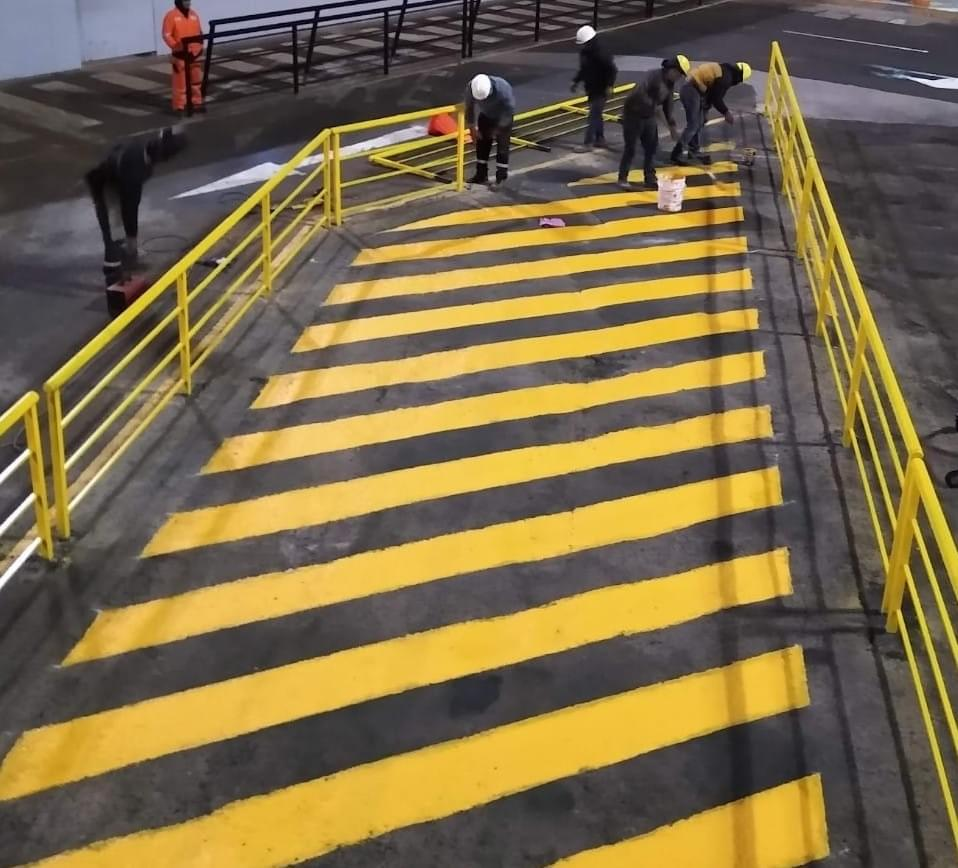
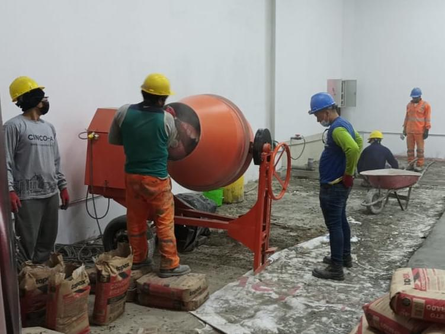
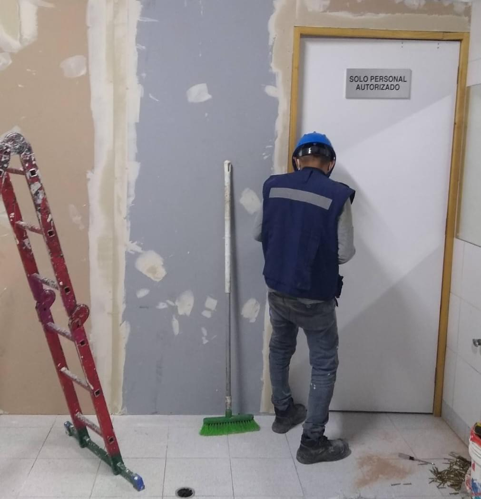
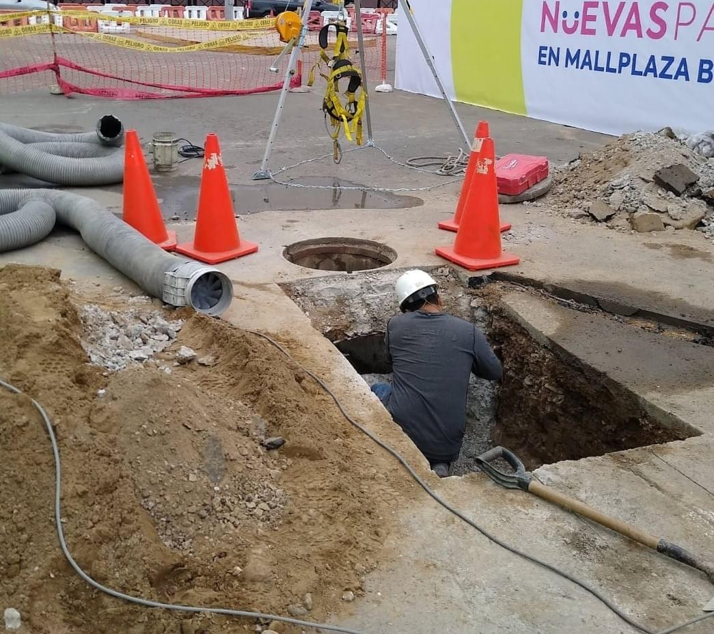

Nuestros Servicios
Pintura en General

- Trabajos en pintura de fachadas, exteriores, interiores de residencias, oficinas y empresas, pintura industrial anticorrosiva, pintura en paredes, techos, pisos, estructuras metálicas, puertas y portones, barandas, pasamanos, ventanas, escalera caracol.
- Como empresa de servicios de mantenimiento llevamos a cabo nuestros trabajos de: empastado, sellado, lijado y pintado, utilizamos productos de marcas reconocidas y garantizados, desde la base. Acabado final «A1»
- Mantenimiento de pintura.
- Pintado en obras.
Electricidad Industrial
- Canalizaciones e instalaciones eléctricas, corrientes débiles, cableado estructura, detección, alarma para locales.
- Desmontaje y mantenimiento de equipos eléctricos, tableros, luminarias, etc.
- Diseño, fabricación, montaje y mantenimiento de tableros eléctricos tanto para industrias como edificios. Fabricación a medida según sus necesidades.
- Mantenimiento de Instalaciones Eléctricas.
Retail - Edificaciones

- Ejecutamos Proyectos de Ingeniería bajo un enfoque de Gestión de Proyectos basados en los principios de la filosofía Lean.
- Excavación masiva y localizada para centros comerciales.
- Concreto para cimentación y casco en edificaciones y Retail
- Acondicionamiento en interior de tiendas conocidas en retail.
- Acabados en general de alta calidad y durabilidad.
Obras Civiles
- Ejecución de encofrado, acabados húmedos en primera fase, enchapes, acero y concreto para losas de techo y losas de piso.
- Implementación de áreas comunes, terrazas, departamentos, oficinas, etc.
- Ejecución de edificios multifamiliares, con un sistema moderno en sus instalaciones, en secuencia de actividades con Estructura de desglose de trabajo (EDT).
- Reparaciones estructurales en edificaciones.
- Demoliciones y remodelaciones en general.
Drywall y Melamine

- Implementación, Cerramiento, Falso Cielo, Tabiquería en General con Drywall.
- Fabricación de equipamiento, mueblería para dormitorios, cocina, etc. a medida.
- Mantenimiento de falso cielo raso, baldosa, drywall, etc.
- Fabricamos muebles de melamina en general, empleamos este material para todo tipo muebles de oficina, dormitorios , cocinas y baños. También fabricamos mobiliarios de melamina centros comerciales.
- Trabajamos con distintos tipos de Drywall como, RH, ST, RF.
Estructuras Metalicas
- Fabricación y montaje de estructuras metálicas como pórticos, racks, coberturas, reforzamiento, accesos, rutas de evacuación, tijerales, barandas, escaleras rejas, cercos de seguridad, puertas, etc. para diversos sectores.
- Fabricación y montaje de techo y estructuras metálicas para centro comercial.
- Fabricación de piezas según plano o modelo del cliente.
- Servicio de mantenimiento a sus estructuras existentes (repintado, modificación, montaje y desmonte).
- Trabajos en acero inoxidable.
Sistema Sanitario

- Instalación o mantenimiento preventivo de tuberías PUC, SCH, PPR, FG, FF, GRASOS, GRISES, ETC.
- Instalación o mantenimiento de presión constante, equipos hidroneumáticos, etc.
- Mantenimiento y limpieza en redes de desagüe, agua, griferías en general, sistemas de drenaje, canaletas, etc
- Servicios con camión cisterna con succión (Succión con 5-10-15 Mt3)
- Mantenimiento de redes matrices internas y externas.
- Sistema contra roedores y plagas en puntos de desagüe.
ACI / DACI / HVAC
- Instalación y mantenimiento periódico de Sistemas de Agua contra Incendio (ACI) y Sistemas de Detección y Alarma de Incendios (DACI).
- Prevención para detectar fallas en sistema de alarmas.
- Instalación de dispositivos iniciadores de alarma (Pulsadores Manuales De Disparo, Detectores De Humo, Detectores De Calor, Detectores De Llama, Detectores De Gas)
- Instalación de dispositivos de alarma de incendios, audible y visible.
- Suministro e instalación de equipos de aire acondicionado (Split Ducto, Rooftop, Chillers, Sistemas VRF) en oficinas, instituciones, bancos. Proporcionamos sistemas inverter para un menor consumo energético.